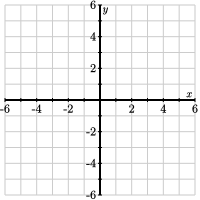

Section 2.1 Vectors and linear combinations
It is a remarkable fact that algebra, which is about equations and their solutions, and geometry are intimately connected. For instance, the solution set of a linear equation in two unknowns, such as \(2x + y = 1\text{,}\) can be represented graphically as a straight line. The aim of this section is to further this connection by introducing vectors, which will help us to apply geometric intuition to our thinking about linear systems.
Subsection 2.1.1 Vectors
A vector is most simply thought of as a matrix with a single column. For instance,
are both vectors. Since the vector \(\vvec\) has two entries, we say that it is a two-dimensional vector; in the same way, the vector \(\wvec\) is a four-dimensional vector. We denote the set of all \(m\)-dimensional vectors by \(\real^m\text{.}\) Consequently, if \(\uvec\) is a 3-dimensional vector, we say that \(\uvec\) is in \(\real^3\text{.}\)
While it can be difficult to visualize a four-dimensional vector, we can draw a simple picture describing the two-dimensional vector \(\vvec\text{.}\)
We think of \(\vvec\) as describing a walk we take in the plane where we move two units horizontally and one unit vertically. Though we allow ourselves to begin walking from any point in the plane, we will most frequently begin at the origin, in which case we arrive at the the point \((2,1)\text{,}\) as shown in the figure.
There are two simple algebraic operations we can perform on vectors.
- Scalar Multiplication
-
We multiply a vector \(\vvec\) by a real number \(a\) by multiplying each of the components of \(\vvec\) by \(a\text{.}\) For instance,
\begin{equation*} -3\left[\begin{array}{r} 2 \\ -4 \\ 1 \\ \end{array}\right] = \left[\begin{array}{r} -6 \\ 12 \\ -3 \\ \end{array}\right]. \end{equation*}The real number \(a\) is called a scalar.
- Vector Addition
-
We add two vectors of the same dimension by adding their components. For instance,
\begin{equation*} \left[\begin{array}{r} 2 \\ -4 \\ 3 \\ \end{array}\right] + \left[\begin{array}{r} -5 \\ 6 \\ -3 \\ \end{array}\right] = \left[\begin{array}{r} -3 \\ 2 \\ 0 \\ \end{array}\right]. \end{equation*}
Preview Activity 2.1.1. Scalar Multiplication and Vector Addition.
Suppose that
-
Find expressions for the vectors
\begin{equation*} \begin{array}{cccc} \vvec, \amp 2\vvec, \amp -\vvec, \amp -2\vvec, \\ \wvec, \amp 2\wvec, \amp -\wvec, \amp -2\wvec\text{.} \\ \end{array} \end{equation*}and sketch them below.
 What geometric effect does scalar multiplication have on a vector? Also, describe the effect multiplying by a negative scalar has.
Sketch the vectors \(\vvec, \wvec, \vvec + \wvec\) below.
Consider vectors that have the form \(\vvec + a\wvec\) where \(a\) is any scalar. Sketch a few of these vectors when, say, \(a = -2, -1, 0, 1, \) and \(2\text{.}\) Give a geometric description of this set of vectors.
-
If \(a\) and \(b\) are two scalars, then the vector
\begin{equation*} a \vvec + b \wvec \end{equation*}is called a linear combination of the vectors \(\vvec\) and \(\wvec\text{.}\) Find the vector that is the linear combination when \(a = -2\) and \(b = 1\text{.}\)
Can the vector \(\left[\begin{array}{r} -31 \\ 37 \end{array}\right]\) be represented as a linear combination of \(\vvec\) and \(\wvec\text{?}\)
The preview activity demonstrates how we may interpret scalar multiplication and vector addition geometrically.
First, we see that scalar multiplication has the effect of stretching or compressing a vector. Multiplying by a negative scalar changes the direction of the vector. In either case, we see that scalar multiplying the vector \(\vvec\) produces a new vector on the line defined by \(\vvec\text{,}\) as shown in Figure 2.1.1. 
To understand the sum \(\vvec + \wvec\text{,}\) we imagine walking from the origin with the appropriate horizontal and vertical changes given by \(\vvec\text{.}\) From there, we continue our walk using the horizontal and vertical changes prescribed by \(\wvec\text{,}\) after which we arrive at the sum \(\vvec
+ \wvec\text{.}\) This is illustrated on the left of Figure 2.1.2 where the tail of \(\wvec\) is placed on the tip of \(\vvec\text{.}\) 

We have now seen that the set of vectors having the form \(a\vvec\) is a line. To form the set of vectors \(a\vvec+\wvec\text{,}\) we can begin with the vector \(\wvec\) and add multiples of \(\vvec\text{.}\) Geometrically, this means that we begin from the tip of \(\wvec\) and move in a direction parallel to \(\vvec\text{.}\) The effect is to translate the line \(a\vvec\) by the vector \(\wvec\text{,}\) as shown in Figure 2.1.3. 
At times, it will be useful for us to think of vectors and points interchangeably. That is, we may wish to think of the vector \(\left[\begin{array}{r} 2 \\ 1 \end{array}\right]\) as describing the point \((2,1)\) and vice-versa. When we say that the vectors having the form \(a\vvec + \wvec\) form a line, we really mean that the tips of the vectors all lie on the line passing through \(\wvec\) and parallel to \(\vvec\text{.}\)
Observation 2.1.4.
Even though these vector operations are new, it is straightforward to check that some familiar properties hold.
- Commutativity
\(\vvec + \wvec = \wvec + \vvec\text{.}\)
- Distributivity
\(a(\vvec + \wvec) = a\vvec + a\wvec\text{.}\)
Sage can perform scalar multiplication and vector addition. We define a vector using the vector command; then * and + denote scalar multiplication and vector addition.
Subsection 2.1.2 Linear combinations
Linear combinations, which we encountered in the preview activity, provide the link between vectors and linear systems. In particular, they will help us apply geometric intuition to problems involving linear systems.
Definition 2.1.5.
The linear combination of the vectors \(\vvec_1,\vvec_2,\ldots,\vvec_n\) with scalars \(c_1,c_2,\ldots,c_n\) is the vector
The scalars \(c_1,c_2,\ldots,c_n\) are called the weights of the linear combination.
Activity 2.1.2.
In this activity, we will look at linear combinations of a pair of vectors,
with weights \(a\) and \(b\text{.}\)
The diagram below can be used to construct linear combinations whose weights \(a\) and \(b\) may be varied using the sliders at the top. The vectors \({\mathbf v}\) and \({\mathbf w}\) are drawn in gray while the linear combination $$ a{\mathbf v} + b{\mathbf w} $$ is in red.
The weight \(b\) is initially set to 0. Explain what happens as you vary \(a\) with \(b=0\text{?}\) How is this related to scalar multiplication?
What is the linear combination of \(\vvec\) and \(\wvec\) when \(a = 1\) and \(b=-2\text{?}\) You may find this result using the diagram, but you should also verify it by computing the linear combination.
Describe the vectors that arise when the weight \(b\) is set to 1 and \(a\) is varied. How is this related to our investigations in the preview activity?
Can the vector \(\left[\begin{array}{r} 0 \\ 0 \end{array} \right]\) be expressed as a linear combination of \(\vvec\) and \(\wvec\text{?}\) If so, what are weights \(a\) and \(b\text{?}\)
Can the vector \(\left[\begin{array}{r} 3 \\ 0 \end{array} \right]\) be expressed as a linear combination of \(\vvec\) and \(\wvec\text{?}\) If so, what are weights \(a\) and \(b\text{?}\)
Verify the result from the previous part by algebraically finding the weights \(a\) and \(b\) that form the linear combination \(\left[\begin{array}{r} 3 \\ 0 \end{array} \right]\text{.}\)
Can the vector \(\left[\begin{array}{r} 1.3 \\ -1.7 \end{array} \right]\) be expressed as a linear combination of \(\vvec\) and \(\wvec\text{?}\) What about the vector \(\left[\begin{array}{r} 15.2 \\ 7.1 \end{array} \right]\text{?}\)
Are there any two-dimensional vectors that cannot be expressed as linear combinations of \(\vvec\) and \(\wvec\text{?}\)
This activity illustrates how linear combinations are constructed geometrically: the linear combination \(a\vvec + b\wvec\) is found by walking along \(\vvec\) a total of \(a\) times followed by walking along \(\wvec\) a total of \(b\) times. When one of the weights is held constant while the other varies, the vector moves along a line.
Example 2.1.6.
The previous activity also shows that questions about linear combinations lead naturally to linear systems. Let's ask how we can describe the vector \(\bvec=\left[\begin{array}{r} -1 \\ 4 \end{array} \right]\) as a linear combination of \(\vvec\) and \(\wvec\text{.}\) We need to find weights \(a\) and \(b\) such that
Equating the components of the vectors on each side of the equation, we arrive at the linear system
This means that \(\bvec\) is a linear combination of \(\vvec\) and \(\wvec\) if this linear system is consistent.
To solve this linear system, we construct its corresponding augmented matrix and find its reduced row echelon form.
which tells us the weights \(a=-2\) and \(b=3\text{;}\) that is,
In fact, we know even more because the reduced row echelon matrix tells us that these are the only possible weights. Therefore, \(\bvec\) may be expressed as a linear combination of \(\vvec\) and \(\wvec\) in exactly one way.
This example demonstrates the connection between linear combinations and linear systems. Asking if a vector \(\bvec\) is a linear combination of vectors \(\vvec_1,\vvec_2,\ldots,\vvec_n\) is the same as asking whether an associated linear system is consistent.
In fact, we may easily describe the linear system we obtain in terms of the vectors \(\vvec\text{,}\) \(\wvec\text{,}\) and \(\bvec\text{.}\) Notice that the augmented matrix we found was \(\left[ \begin{array}{rr|r} 2 \amp 1 \amp -1 \\ 1 \amp 2 \amp 4 \end{array} \right].\) The first two columns of this matrix are \(\vvec\) and \(\wvec\) and the rightmost column is \(\bvec\text{.}\) As shorthand, we will write this augmented matrix replacing the columns with their vector representation:
This fact is generally true so we record it in the following proposition.
Proposition 2.1.7.
The vector \(\bvec\) is a linear combination of the vectors \(\vvec_1,\vvec_2,\ldots,\vvec_n\) if and only if the linear system corresponding to the augmented matrix
is consistent. A solution to this linear system gives weights \(c_1,c_2,\ldots,c_n\) such that
The next activity puts this proposition to use.
Activity 2.1.3. Linear combinations and linear systems.
-
Given the vectors
\begin{equation*} \vvec_1 = \left[\begin{array}{r} 4 \\ 0 \\ 2 \\ 1 \end{array} \right], \vvec_2 = \left[\begin{array}{r} 1 \\ -3 \\ 3 \\ 1 \end{array} \right], \vvec_3 = \left[\begin{array}{r} -2 \\ 1 \\ 1 \\ 0 \end{array} \right], \bvec = \left[\begin{array}{r} 0 \\ 1 \\ 2 \\ -2 \end{array} \right]\text{,} \end{equation*}we ask if \(\bvec\) can be expressed as a linear combination of \(\vvec_1\text{,}\) \(\vvec_2\text{,}\) and \(\vvec_3\text{.}\) Rephrase this question by writing a linear system for the weights \(c_1\text{,}\) \(c_2\text{,}\) and \(c_3\) and use the Sage cell below to answer this question.
-
Consider the following linear system.
\begin{equation*} \begin{alignedat}{4} 3x_1 \amp {}+{} \amp 2x_2 \amp {}-{} x_3 \amp {}={} \amp 4 \\ x_1 \amp \amp \amp {}+{} 2x_3 \amp {}={} \amp 0 \\ -x_1 \amp {}-{} \amp x_2 \amp {}+{} 3x_3 \amp {}={} \amp 1 \\ \end{alignedat} \end{equation*}Identify vectors \(\vvec_1\text{,}\) \(\vvec_2\text{,}\) \(\vvec_3\text{,}\) and \(\bvec\) and rephrase the question "Is this linear system consistent?" by asking "Can \(\bvec\) be expressed as a linear combination of \(\vvec_1\text{,}\) \(\vvec_2\text{,}\) and \(\vvec_3\text{?}\)"
-
Consider the vectors
\begin{equation*} \vvec_1 = \left[\begin{array}{r} 0 \\ -2 \\ 1 \\ \end{array} \right], \vvec_2 = \left[\begin{array}{r} 1 \\ 1 \\ -1 \\ \end{array} \right], \vvec_3 = \left[\begin{array}{r} 2 \\ 0 \\ -1 \\ \end{array} \right], \bvec = \left[\begin{array}{r} -1 \\ 3 \\ -1 \\ \end{array} \right]\text{.} \end{equation*}Can \(\bvec\) be expressed as a linear combination of \(\vvec_1\text{,}\) \(\vvec_2\text{,}\) and \(\vvec_3\text{?}\) If so, can \(\bvec\) be written as a linear combination of these vectors in more than one way?
Considering the vectors \(\vvec_1\text{,}\) \(\vvec_2\text{,}\) and \(\vvec_3\) from the previous part, can we write every three-dimensional vector \(\bvec\) as a linear combination of these vectors? Explain how the pivot positions of the matrix \(\left[\begin{array}{rrr} \vvec_1 \amp \vvec_2 \amp \vvec_3 \end{array} \right]\) help answer this question.
-
Now consider the vectors
\begin{equation*} \vvec_1 = \left[\begin{array}{r} 0 \\ -2 \\ 1 \\ \end{array} \right], \vvec_2 = \left[\begin{array}{r} 1 \\ 1 \\ -1 \\ \end{array} \right], \vvec_3 = \left[\begin{array}{r} 1 \\ -1 \\ -2 \\ \end{array} \right], \bvec = \left[\begin{array}{r} 0 \\ 8 \\ -4 \\ \end{array} \right]\text{.} \end{equation*}Can \(\bvec\) be expressed as a linear combination of \(\vvec_1\text{,}\) \(\vvec_2\text{,}\) and \(\vvec_3\text{?}\) If so, can \(\bvec\) be written as a linear combination of these vectors in more than one way?
Considering the vectors \(\vvec_1\text{,}\) \(\vvec_2\text{,}\) and \(\vvec_3\) from the previous part, can we write every three-dimensional vector \(\bvec\) as a linear combination of these vectors? Explain how the pivot positions of the matrix \(\left[\begin{array}{rrr} \vvec_1 \amp \vvec_2 \amp \vvec_3 \end{array} \right]\) help answer this question.
Subsection 2.1.3 Summary
This section has introduced vectors, linear combinations, and their connection to linear systems.
There are two operations we can perform with vectors: scalar multiplication and vector addition. Both of these operations have geometric meaning.
Given a set of vectors and a set of scalars we call weights, we can create a linear combination using scalar multiplication and vector addition.
-
A solution to the linear system whose augmented matrix is
\begin{equation*} \left[\begin{array}{rrrr|r} \vvec_1 \amp \vvec_2 \amp \ldots \amp \vvec_n \amp \bvec \end{array}\right] \end{equation*}is a set of weights that expressex \(\bvec\) as a linear combination of \(\vvec_1,\vvec_2,\ldots,\vvec_n\text{.}\)
Exercises 2.1.4 Exercises
1.
Consider the vectors
Sketch these vectors below.
Compute the vectors \(-3\vvec\text{,}\) \(2\wvec\text{,}\) \(\vvec + \wvec\text{,}\) and \(\vvec - \wvec\) and add them into the sketch above.
Sketch below the set of vectors having the form \(2\vvec + t\wvec\) where \(t\) is any scalar.
Sketch below the line \(y=3x - 2\text{.}\) Then identify two vectors \(\vvec\) and \(\wvec\) so that this line is described by \(\vvec + t\wvec\text{.}\) Are there other choices for the vectors \(\vvec\) and \(\wvec\text{?}\)
2.
Shown below are two vectors \(\vvec\) and \(\wvec\)
Express the labeled points as linear combinations of \(\vvec\) and \(\wvec\text{.}\)
Sketch the line described parametrically as \(-2\vvec + t\wvec\text{.}\)
3.
Consider the vectors
Find the linear combination with weights \(c_1 = 2\text{,}\) \(c_2=-3\text{,}\) and \(c_3=1\text{.}\)
Can you write the vector \({\mathbf 0} = \left[\begin{array}{r} 0 \\ 0 \end{array}\right]\) as a linear combination of \(\vvec_1\text{,}\) \(\vvec_2\text{,}\) and \(\vvec_3\text{?}\) If so, describe all the ways in which you can do so.
Can you write the vector \({\mathbf 0} = \left[\begin{array}{r} 0 \\ 0 \end{array}\right]\) as a linear combination using just the first two vectors \(\vvec_1\) \(\vvec_2\text{?}\) If so, describe all the ways in which you can do so.
Can you write \(\vvec_3\) as a linear combination of \(\vvec_1\) and \(\vvec_2\text{?}\) If so, in how many ways?
4.
Nutritional information about a breakfast cereal is printed on the box. For instance, one serving of Frosted Flakes has 111 calories, 140 milligrams of sodium, and 1.2 grams of protein. We may represent this as a vector
One serving of Cocoa Puffs has 120 calories, 105 milligrams of sodium, and 1.0 grams of protein.
Write the vector describing the nutritional content of Cocoa Puffs.
Suppose you eat \(a\) servings of Frosted Flakes and \(b\) servings of Cocoa Puffs. Use the language of vectors and linear combinations to express the total amount of calories, sodium, and protein you have consumed.
How many servings of each cereal have you eaten if you have consumed 342 calories, 385 milligrams of sodium, and 3.4 grams of protein.
Suppose your sister consumed 250 calories, 200 milligrams of sodium, and 4 grams of protein. What can you conclude about her breakfast?
5.
Consider the vectors
Can you express the vector \(\bvec=\left[\begin{array}{r} 10 \\ 1 \\ -8 \end{array}\right]\) as a linear combination of \(\vvec_1\text{,}\) \(\vvec_2\text{,}\) and \(\vvec_3\text{?}\) If so, describe all the ways in which you can do so.
Can you express the vector \(\bvec=\left[\begin{array}{r} 3 \\ 7 \\ 1 \end{array}\right]\) as a linear combination of \(\vvec_1\text{,}\) \(\vvec_2\text{,}\) and \(\vvec_3\text{?}\) If so, describe all the ways in which you can do so.
Show that \(\vvec_3\) can be written as a linear combination of \(\vvec_1\) and \(\vvec_2\text{.}\)
-
Explain why any linear combination of \(\vvec_1\text{,}\) \(\vvec_2\text{,}\) and \(\vvec_3\text{,}\)
\begin{equation*} a\vvec_1 + b\vvec_2 + c\vvec_3, \end{equation*}can be rewritten as a linear combination of just \(\vvec_1\) and \(\vvec_2\text{.}\)
6.
Consider the vectors
For what value(s) of \(k\text{,}\) if any, can the vector \(\left[\begin{array}{r} k \\ -2 \\ 5 \end{array}\right]\) be written as a linear combination of \(\vvec_1\) and \(\vvec_2\text{?}\)
7.
Provide a justification for your response to the following statements or questions.
True of false: Given two vectors \(\vvec\) and \(\wvec\text{,}\) the vector \(2\vvec\) is a linear combination of \(\vvec\) and \(\wvec\text{.}\)
True or false: Suppose \(\vvec_1,\vvec_2,\ldots,\vvec_n\) is a collection of \(m\)-dimensional vectors and that the matrix \(\left[\begin{array}{rrrr} \vvec_1 \amp \vvec_2 \amp \ldots \amp \vvec_n \end{array}\right]\) has a pivot position in every row. If \(\bvec\) is any \(m\)-dimensional vector, then \(\bvec\) can be written as a linear combination of \(\vvec_1,\vvec_2,\ldots,\vvec_n\text{.}\)
True or false: Suppose \(\vvec_1,\vvec_2,\ldots,\vvec_n\) is a collection of \(m\)-dimensional vectors and that the matrix \(\left[\begin{array}{rrrr} \vvec_1 \amp \vvec_2 \amp \ldots \amp \vvec_n \end{array}\right]\) has a pivot position in every row and every column. If \(\bvec\) is any \(m\)-dimensional vector, then \(\bvec\) can be written as a linear combination of \(\vvec_1,\vvec_2,\ldots,\vvec_n\) in exactly one way.
True or false: It is possible to find two 3-dimensional vectors \(\vvec_1\) and \(\vvec_2\) such that every 3-dimensional vector can be written as a linear combination of \(\vvec_1\) and \(\vvec_2\text{.}\)
8.
A theme that will later unfold concerns the use of coordinate systems. We can identify the point \((x,y)\) with the tip of the vector \(\left[\begin{array}{r}x\\y\end{array}\right]\text{,}\) drawn emanating from the origin. We can then think of the usual Cartesian coordinate system in terms of linear combinations of the vectors


The point \((2,-3)\) is identified with the vector
If we have vectors
we may define a new coordinate system, such that a point \(\{x,y\}\) will correspond to the vector
For instance, the point \(\{2,-3\}\) is shown on the right side of Figure 2.1.8
-
Write the point \(\{2,-3\}\) in standard coordinates; that is, find \(x\) and \(y\) such that
\begin{equation*} (x,y) = \{2,-3\}\text{.} \end{equation*} -
Write the point \((2,-3)\) in the new coordinate system; that is, find \(a\) and \(b\) such that
\begin{equation*} \{a,b\} = (2,-3)\text{.} \end{equation*} Convert a general point \(\{a,b\}\text{,}\) expressed in the new coordinate system, into standard Cartesian coordinates \((x,y)\text{.}\)
What is the general strategy for converting a point from standard Cartesian coordinates \((x,y)\) to the new coordinates \(\{a,b\}\text{?}\) Actually implementing this strategy in general may take a bit of work so just describe the strategy. We will study this in more detail later.